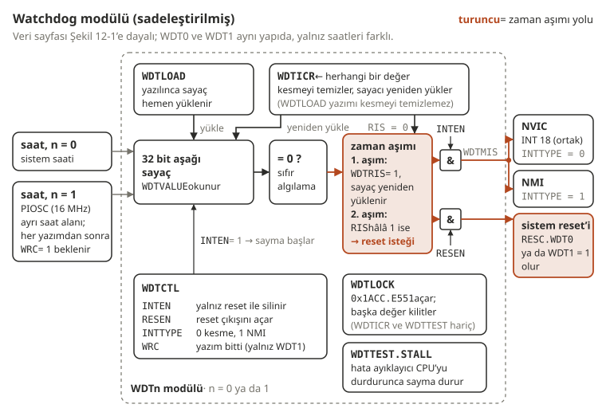
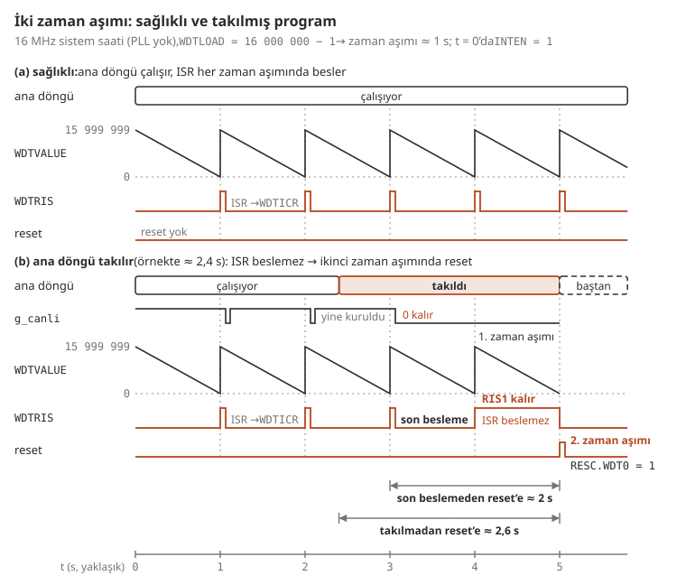
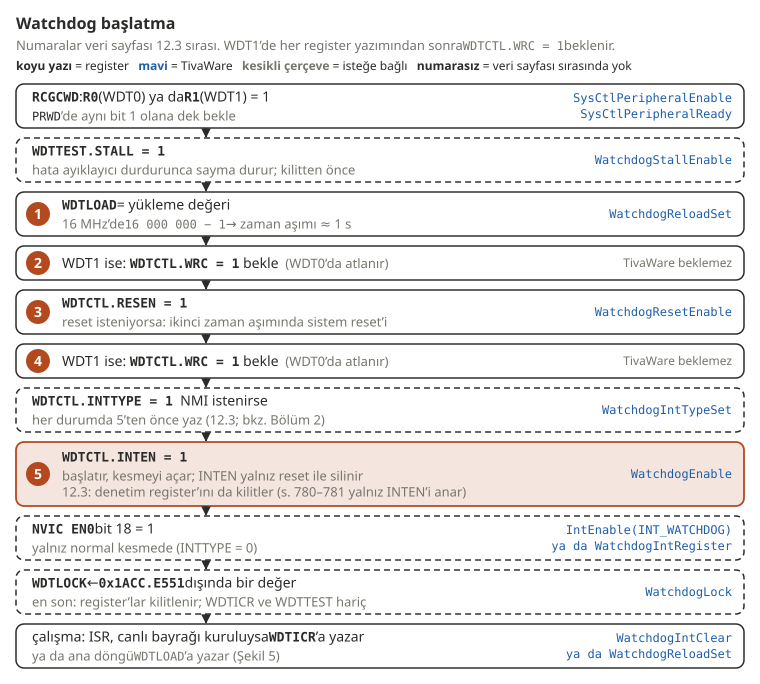
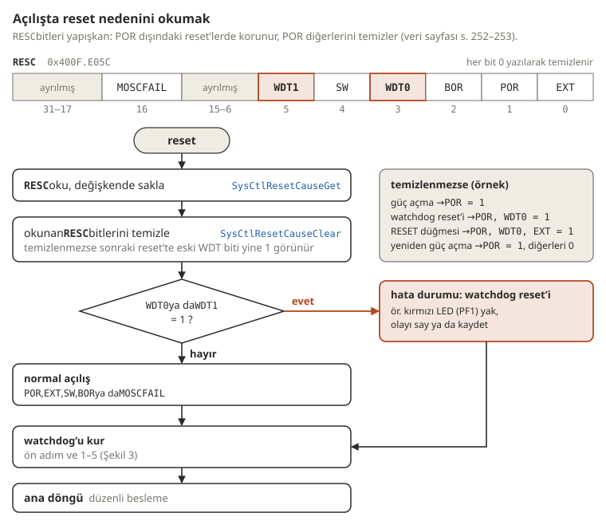
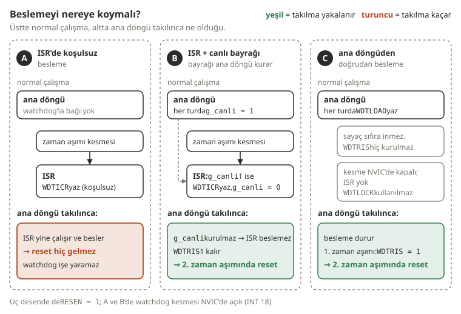

Watchdog Zamanlayıcısı (WDT)
Bir gömülü sistemin yanında çoğu zaman kimse yoktur. Program bir sonsuz döngüye girerse, bir gürültü darbesi program sayacını anlamsız bir adrese atarsa ya da beklenen bir sensör hiç yanıt vermezse, sistem yeniden çalıştırılana kadar takılı kalır. Watchdog (bekçi köpeği) zamanlayıcısı bu durumda sistemi kendiliğinden kurtaran donanımdır: program onu düzenli olarak "beslemezse" önce bir kesme, sonra bir reset üretir. Bu notta TM4C123GH6PM'deki iki watchdog modülünü, süre hesabını, başlatma sırasını, reset nedeninin nasıl okunacağını ve dersteki üç projeyi inceleyeceğiz.
Bu notun amacı, LaunchPad'de takılan bir programı watchdog ile kendiliğinden yeniden başlatmak ve açılışta bunun olduğunu anlamaktır: watchdog doğru süreyle kurulur, yalnız program gerçekten sağlıklıyken beslenir, gerekirse kilitlenir ve reset nedeni RESC'ten okunur. Bu notun sonunda öğrenci:
- Watchdog'un neden gerektiğini ve "besleme" kavramını açıklayabilir.
- WDT0 ile WDT1'in farkını (sistem saati / PIOSC, WRC biti), iki zaman aşımı mantığını, INTTYPE, STALL ve kilit mekanizmasını veri sayfasına dayanarak anlatabilir.
- İstenen zaman aşımı için WDTLOAD değerini ve reset'e kadar geçen süreyi hesaplayabilir, en uzun süreyi bulabilir.
- Veri sayfası 12.3'teki 5 adımı register düzeyinde (API'siz) ve TivaWare ile (API'li) uygulayabilir, WDT1'de her yazmadan sonra WRC'yi bekler.
- Açılışta RESC register'ını okuyup watchdog reset'ini diğer reset nedenlerinden ayırt eder ve yapışkan bitleri temizler.
- Beslemenin nereye konacağına karar verir: işleyicide (ISR) koşulsuz beslemenin neden işe yaramadığını gösterir, "canlı bayrağı" ya da ana döngüden besleme kullanır.
- Ders kodlarındaki zayıflıkları bulabilir, TI'ın watchdog örneğini LaunchPad'e uyarlayabilir.
1. Watchdog nedir, neden gerekir?
Amaç: watchdog'un çözdüğü sorunu ve "besleme" kavramını tanımak.
Watchdog, yazılımdan bağımsız sayan bir geri sayıcıdır. Program sayaca belli aralıklarla "her şey yolunda" demek zorundadır. Bu işleme besleme (İngilizce servicing, feeding, kicking) denir. Besleme sayacı baştan başlatır. Program besleyemeyecek kadar bozulmuşsa sayaç sıfıra iner ve watchdog sistemi kurtarmak için harekete geçer. Veri sayfasının tanımıyla watchdog, sistem bir yazılım hatası ya da bir dış birimin beklenen biçimde yanıt vermemesi yüzünden çöktüğünde denetimi geri almak için kullanılır (§12, s. 774).
Watchdog'un yakaladığı tipik durumlar:
- Sonsuz döngü: çıkış koşulu hiç doğru olmayan bir
while, örneğin döngü içinde yeniden okunmayan bir değişkeni bekleyen döngü (Bölüm 7'deki satır 84 böyledir). - Yanıt vermeyen dış birim: bir sensörün hazır bitini sonsuza kadar beklemek.
- Gürültü ve bellek bozulması: elektriksel bir darbe ya da taşan bir yığın, program sayacını ya da bir değişkeni bozabilir. Program "çalışıyor" görünür ama yanlış yerdedir.
- Kilitlenen kesme: bayrağı temizlenmeyen bir kesme işleyicisi art arda girilir ve ana döngü hiç çalışamaz.
Watchdog hatayı düzeltmez. Yaptığı şey sistemi bilinen bir başlangıç durumuna döndürmektir: önce programa son bir şans olarak bir kesme verir, düzelmezse mikrodenetleyiciyi reset'ler. Açılışta programın "neden yeniden başladım?" sorusunu sorabilmesi için reset nedeni RESC register'ında saklanır (Bölüm 5).
TI'ın LaunchPad Workshop kitapçığı TM4C123GH6PM'nin zamanlayıcıları arasında "ayrı saatli 2 watchdog zamanlayıcısı" sayar (s. 1-6). Watchdog için ayrı bir Lab yoktur. Bu notun TI kısmı TivaWare'deki watchdog örneğinin uyarlamasıdır (Bölüm 8).
2. TM4C123'te iki watchdog
Amaç: iki modülün yapısını, iki zaman aşımı mantığını ve koruma mekanizmalarını veri sayfasından öğrenmek.
TM4C123GH6PM'de iki watchdog modülü vardır (s. 774). WDT0 sistem saatiyle, WDT1 PIOSC (16 MHz iç osilatör) ile sürülür. İki modül aynıdır. Tek fark WDT1'in ayrı bir saat alanında olması ve bu yüzden register erişimlerinin senkronize edilmesidir. Veri sayfası iki modülün bulunma nedenini bir saat kaynağının arızalanma olasılığıyla açıklar (§5.2.2.6, s. 217): PLL ya da kristal bozulsa bile PIOSC'den beslenen WDT1 saymaya devam eder.
| WDT0 | WDT1 | |
|---|---|---|
| Taban adresi (s. 776) | 0x4000.0000 | 0x4000.1000 |
| Saat | Sistem saati (16, 40, 80 MHz …) | PIOSC, 16 MHz (±%3, s. 219) |
| WDTCTL reset değeri (s. 777) | 0x0000.0000 | 0x8000.0000 (WRC = 1) |
| Erişim kısıtı | Yok | Her yazmadan sonra WRC = 1 beklenir (§12.2.1) |
| Saat açma / hazır biti | RCGCWD.R0, PRWD.R0 | RCGCWD.R1, PRWD.R1 |
| RESC'teki biti (s. 252–253) | WDT0, bit 3 | WDT1, bit 5 |
| Kesme | İkisi de kesme 18'i paylaşır (vektör 34, adres 0x0000.0088, s. 104) | |
| TivaWare | WATCHDOG0_BASE, SYSCTL_PERIPH_WDOG0 | WATCHDOG1_BASE, SYSCTL_PERIPH_WDOG1 |
Modülün özellikleri (s. 774): yükleme register'lı 32 bitlik geri sayıcı, açma bitli ayrı watchdog saati, maskelenebilir ve isteğe bağlı NMI olabilen kesme, kaçak yazılıma karşı kilit register'ı, açılıp kapatılabilen reset üretimi, hata ayıklayıcı CPU'yu durdurduğunda isteğe bağlı durma (stall).
Blok yapısı
Şekil 1 modülün yapısını gösterir. 32 bitlik sayaç WDTLOAD'dan yüklenir ve saat kaynağıyla (WDT0'da sistem saati, WDT1'de PIOSC) geri sayar. Karşılaştırıcı sayacın 0x0000.0000'a ulaştığını görünce denetim bloğu, WDTCTL'deki bitlere göre kesme (ya da NMI) ve reset üretir. Kesme durumu WDTRIS ve WDTMIS'ten okunur, WDTICR'a yazılarak temizlenir. WDTLOCK yazma korumasını, WDTTEST hata ayıklayıcıda durmayı denetler.

İki zaman aşımı: önce kesme, sonra reset
Veri sayfasının işlevsel açıklaması (§12.2, s. 775–776) şöyle özetlenebilir:
- Başlatma: sayaç açılınca (INTEN = 1) watchdog kesmesi de açılır. Sayaç WDTLOAD'dan geri saymaya başlar.
- İlk zaman aşımı: sayaç sıfıra ulaşınca WDTRIS = 1 olur ve kesme (INTTYPE = 1 ise NMI) üretilir. Sayaç WDTLOAD'dan yeniden yüklenir ve saymayı sürdürür.
- Besleme: kesme ikinci zaman aşımından önce WDTICR'a yazılarak temizlenirse sayaç yeniden WDTLOAD'dan yüklenir, her şey baştan başlar.
- İkinci zaman aşımı: sayaç, ilk kesme temizlenmeden yeniden sıfıra ulaşırsa ve RESEN = 1 ise watchdog sisteme reset işaretini verir. RESEN = 0 ise reset olmaz.
Dört ayrıntı daha (s. 775–778, 782):
- Sayaç çalışırken WDTLOAD'a yeni değer yazılırsa sayaç hemen bu değerle yüklenir ve saymayı sürdürür. Yani WDTLOAD'a yazmak da sayacı baştan başlatır.
- WDTLOAD'a yazmak etkin bir kesmeyi temizlemez. Kesme yalnız WDTICR'a yazılarak temizlenir. WDTICR'a herhangi bir değer yazmak hem kesmeyi temizler hem sayacı yeniden yükler.
- WDTLOAD'a
0x0000.0000yazılırsa kesme hemen üretilir. - Watchdog reset sonrasında kapalıdır. Veri sayfası en güçlü koruma için watchdog'un reset vektörünün başında açılabileceğini belirtir.
Watchdog reset'i çekirdeği ve bütün çevre birimlerini reset'ler, JTAG'da yalnız pin ayarlarını (Tablo 5-2, s. 213). Watchdog modülü de reset'lenir: program baştan başlar ve watchdog'u yeniden kurmalıdır. Reset işareti iç reset zaman aşımından sonra (TIRWDR nominal 2,10 µs, Tablo 24-11, s. 1370) bırakılır, işlemci yığın göstericisini ve reset vektörünü yükleyip çalışmaya başlar (s. 217–218).
Watchdog kesmesi seviye duyarlıdır: WDTICR'a yazılana kadar etkin kalır. Cortex-M4'te seviye duyarlı bir kesmenin işareti işleyiciden dönerken hâlâ etkinse kesme yeniden bekleyen duruma geçer ve işlemci işleyiciye hemen yeniden girer (§3.1.2.1–3.1.2.2, s. 124–125). Watchdog işleyicisi beslemeden dönerse işlemci işleyiciye art arda girer (tail-chaining), ana döngü bir daha çalışamaz. RESEN = 1 ise bu sorun değildir, hatta istenen davranıştır: ikinci zaman aşımında reset gelir (TI'ın örneği böyle çalışır, Bölüm 8). RESEN = 0 iken temizlenmeyen kesme sistemi kurtarmak yerine kilitler.
Kesme mi, NMI mı?
WDTCTL'deki INTTYPE biti (bit 2, s. 781) ilk zaman aşımının türünü seçer: 0 standart kesme (kesme 18), 1 maskelenemeyen kesme, NMI (Non-Maskable Interrupt). NMI istisna 2'dir, vektör adresi 0x0000.0008, önceliği sabit −2'dir: reset dışında hiçbir istisna onu engelleyemez ya da kesemez (Tablo 2-8, s. 102–103). PRIMASK = 1 iken ya da daha öncelikli bir işleyici takılmışken standart kesme hiç gelmez, NMI yine gelir. Dolayısıyla son bir kurtarma işi (bir hatayı kaydetmek, çıkışları güvenli duruma almak) NMI ile daha güvenilirdir.
NMI'ın dört kaynağı vardır: NMI pini (PD7 ya da PF0), ana osilatör doğrulama hatası, INTCTRL.NMISET ve INTTYPE = 1 olan watchdog. İşleyici nedeni kendisi ayırt etmelidir (§5.2.3, s. 218), örneğin WDTMIS'e bakarak. TivaWare'de tür WatchdogIntTypeSet(base, WATCHDOG_INT_TYPE_NMI) ile seçilir. NMI işleyicisi WatchdogIntRegister ile değil IntRegister(FAULT_NMI, …) ile kaydedilir, ve kesme NMI işleyicisinde de WatchdogIntClear ile temizlenmelidir (watchdog.c, belge yorumları satır 343–347 ve 526–528). CCS startup dosyasındaki varsayılan NmiSR sonsuz bir döngüdür.
INTEN tek yönlüdür, WDTLOCK yazmayı kilitler
Watchdog'un kaçak bir yazılım tarafından kapatılmaması için iki koruma vardır:
- INTEN bir kez 1 yapılınca yazılım onu silemez. Veri sayfasına göre INTEN 1 olduktan sonra bu bite yapılan bütün yazmalar yok sayılır. Yazmayı yeniden mümkün kılan tek yol bir donanım reset'i ya da SRWD register'ıyla (s. 310) yapılan bir yazılım reset'idir (s. 780–781). INTEN = 1 aynı zamanda watchdog'u başlatan bittir. Yani başlatılan watchdog INTEN'e yazılarak durdurulamaz (yalnız reset ya da SRWD ile modül reset'i). RESEN ise kilit yokken silinebilir (
WatchdogResetDisable). - WDTLOCK (ofset 0xC00, s. 786):
0x1ACC.E551yazmak diğer bütün register'lara yazmayı açar. Başka herhangi bir değer yazmak kilidi yeniden koyar. Kilit 2 saat çevrimi sonra etkin olur. Okunduğunda kilitliyse0x0000.0001, açıksa0x0000.0000döner. Reset değeri 0'dır: watchdog açık (kilitsiz) başlar. 12.3'teki "herhangi bir değer yazılarak kilitlenir" ifadesi gevşektir: s. 786'ya göre0x1ACC.E551kilidi açar.
Kilitten etkilenmeyen iki register vardır. WDTICR kilitten etkilenmez, böylece kesme her zaman temizlenebilir ve watchdog kilitliyken de beslenebilir (s. 782). WDTTEST de kilitten etkilenmez, ama veri sayfası kilitliyken WDTTEST'e yazılmamasını önerir (s. 786). Sonuç: kilitli bir watchdog'u yalnız WDTICR ile besleyebilirsiniz. WDTLOAD'a yazarak beslemek için önce kilidi açmak gerekir.
Veri sayfasının 12.3'teki 5. adımı "INTEN'i kur: watchdog'u ve kesmeleri aç, denetim register'ını kilitle" der (s. 776). Register açıklaması ise yalnız INTEN yazmalarının yok sayıldığını söyler (s. 780–781). Bu yüzden buradaki "kilit" büyük olasılıkla INTEN'in tek yönlü olmasıdır. INTTYPE gibi diğer ayarlar her durumda 5. adımdan önce yapılır. Bütün register'ların kilitlenmesi ayrı bir iştir: WDTLOCK'a 0x1ACC.E551 dışında bir değer yazılır.
Hata ayıklarken: STALL
WDTTEST'in STALL biti (bit 8, ofset 0x418, reset 0, s. 785): 0 iken mikrodenetleyici hata ayıklayıcıyla durdurulsa da watchdog saymayı sürdürür. 1 iken hata ayıklayıcı işlemciyi durdurunca watchdog da durur, işlemci devam edince kaldığı yerden sayar. STALL = 0 ve RESEN = 1 iken bir kesme noktasında birkaç saniye beklemek kartı reset'ler, çünkü durmuş işlemci watchdog'u besleyemez (6.5).
WDT1 ve WRC
WDT1 bağımsız bir saat alanında olduğu için register'larına art arda yazılamaz (§12.2.1, s. 776). İki yazma arasında, ya da bir yazmanın ardından okumadan önce, WDTCTL'deki WRC (Write Complete, bit 31) biti beklenir. WRC yazma başlayınca 0 olur, yazma tamamlanınca 1 olur. Art arda okumalarda kısıt yoktur. WDT0 sistem saatiyle çalıştığı için bu kısıt yoktur ve onda bit 31 ayrılmıştır (s. 780).
TivaWare 2.1.4'ün watchdog.c dosyasındaki hiçbir fonksiyon WRC'yi denetlemez: WatchdogReloadSet doğrudan WDTLOAD'a, WatchdogResetEnable doğrudan WDTCTL'ye yazar (satır 262–274, 125–137). WDT1 TivaWare ile kullanılacaksa beklemeyi kullanıcı yazar: while ((HWREG(WATCHDOG1_BASE + WDT_O_CTL) & WDT_CTL_WRC) == 0) { }. Hibernation modülünde ise TivaWare bu beklemeyi kendisi yapıyordu (Uyku notu).
Register özeti
| Register | Ofset | Tür, reset | İçerik | Sayfa |
|---|---|---|---|---|
| WDTLOAD | 0x000 | RW, 0xFFFF.FFFF | 32 bitlik yükleme değeri. Yazılınca sayaç hemen yeniden yüklenir | 778 |
| WDTVALUE | 0x004 | RO, 0xFFFF.FFFF | Sayacın o anki değeri | 779 |
| WDTCTL | 0x008 | RW, 0 (WDT1: 0x8000.0000) | WRC (31, yalnız WDT1), INTTYPE (2), RESEN (1), INTEN (0) | 780–781 |
| WDTICR | 0x00C | WO | Herhangi bir değer yazmak kesmeyi siler ve sayacı yeniden yükler. Kilitten etkilenmez | 782 |
| WDTRIS | 0x010 | RO, 0 | WDTRIS (0): zaman aşımı oldu | 783 |
| WDTMIS | 0x014 | RO, 0 | WDTMIS (0) = WDTRIS AND INTEN | 784 |
| WDTTEST | 0x418 | RW, 0 | STALL (8) | 785 |
| WDTLOCK | 0xC00 | RW, 0 | Yaz: 0x1ACC.E551 açar, başka değer kilitler. Oku: 1 kilitli, 0 açık | 786 |
Ofset 0xFD0–0xFFC'deki WDTPeriphID0–7 ve WDTPCellID0–3 sabit kimlik register'larıdır (s. 787–798), programlamada kullanılmaz. inc/tm4c123gh6pm.h'de adlar WATCHDOG0_LOAD_R, WATCHDOG1_CTL_R gibidir. Bit maskeleri WDT_CTL_INTEN (0x1), WDT_CTL_RESEN (0x2), WDT_CTL_INTTYPE (0x4), WDT_CTL_WRC (0x80000000), WDT_TEST_STALL (0x100), WDT_LOCK_UNLOCK (0x1ACCE551), WDT_LOCK_LOCKED (1)'dir.
3. Süre hesabı
Amaç: istenen zaman aşımı için WDTLOAD değerini ve reset'e kadar geçen süreyi hesaplamak.
Sayaç her saat çevriminde bir azalır ve sıfıra ulaşınca zaman aşımı olur. WDTLOAD = 0 yazılınca kesme hemen geldiği için (s. 778) ilk zaman aşımına kadar geçen süre:
T = WDTLOAD / f (f: WDT0'da sistem saati, WDT1'de PIOSC = 16 MHz)
Veri sayfası, yeniden yüklemenin ayrıca bir saat çevrimi alıp almadığını açıkça yazmaz. Ardışık iki zaman aşımı arası büyük olasılıkla (WDTLOAD + 1) / f'dir. Fark tek bir saat çevrimidir (16 MHz'te 62,5 ns) ve watchdog için önemsizdir. Bu yüzden ders kodlarındaki gibi 1 s için WDTLOAD = f − 1 de, TI örneğindeki gibi WDTLOAD = f de doğrudur. Bu notta T ≈ WDTLOAD / f kullanılır.
Reset ancak ikinci zaman aşımında geldiği için son beslemeden reset'e kadar geçen süre ≈ 2T'dir. Program bir anda takılırsa reset'e kadar geçen süre T ile 2T arasında, ya da beslemenin nasıl yapıldığına göre biraz daha uzundur (6.1'de 2T ile 3T arası).
| Saat (f) | 1 s için WDTLOAD (ya da f) | En uzun T (WDTLOAD = 0xFFFF.FFFF) | Son beslemeden reset'e en uzun süre (2T) |
|---|---|---|---|
| 16 MHz (PIOSC, reset sonrası; 6.1) | 16 000 000 − 1 = 15 999 999 | 268,4 s | 536,9 s |
| 40 MHz (PLL, SYSDIV 5; 6.2, ders kodları) | 40 000 000 − 1 = 39 999 999 | 107,4 s | 214,7 s |
| 80 MHz (PLL, en yüksek) | 80 000 000 − 1 = 79 999 999 | 53,7 s | 107,4 s |
| WDT1, PIOSC 16 MHz (sistem saatinden bağımsız; 6.4) | 15 999 999 | 268,4 s (±%3: 260–276 s) | 536,9 s |
Hesap: 4 294 967 295 / 16 000 000 = 268,4 s. 32 bitlik sayaç SysTick'in 24 bitlik sayacından (16 MHz'te en çok 1,05 s, SysTick notu) çok daha uzun süreler verir. Watchdog'un süresi uygulamaya göre seçilir: en uzun normal döngü süresinden belirgin biçimde uzun, ama sistemin takılı kalmasına izin verilebilecek süreden kısa. WDT0'ın süresi sistem saatine bağlıdır: program saati değiştirirse (örneğin 16 MHz'ten 80 MHz'e) aynı WDTLOAD 5 kat kısa bir süre verir. WDT1'in süresi değişmez.

4. Başlatma adımları
Amaç: veri sayfasının watchdog başlatma sırasını adım adım uygulamak.
Veri sayfası 12.3, watchdog'un saatinin RCGCWD ile açılmasını ister (s. 776) ve ardından beş adım verir. Bu nottaki tablo, Şekil 3 ve kod yorumlarındaki adım numaraları bu beş adımdır. Saat açma "ön adım" olarak numarasız, isteğe bağlı satırlar "—" ile gösterilmiştir.
| Adım | İş | Register (veri sayfası) | TivaWare |
|---|---|---|---|
| Ön adım | Modülün saati ve hazır bekleme | RCGCWD (0x400F.E600) R0 / R1 = 1 (s. 337). Saat açılmadan erişim bus fault üretir. Sonra PRWD (0x400F.EA00) R0 / R1 = 1 beklenir (s. 403). Veri sayfası en az 3 sistem saati bekleme ister (s. 227) | SysCtlPeripheralEnable(SYSCTL_PERIPH_WDOG0), SysCtlPeripheralReady(…) |
| — | Hata ayıklayıcıda durma (isteğe bağlı) | WDTTEST.STALL = 1, kilitten önce | WatchdogStallEnable(base) |
| 1 | Yükleme değeri | WDTLOAD = f × T (− 1) | WatchdogReloadSet(base, değer) |
| 2 | WDT1 ise WRC'yi bekle | WDTCTL.WRC = 1 | Yok, kullanıcı yazar |
| 3 | Reset istenirse RESEN | WDTCTL.RESEN = 1 | WatchdogResetEnable(base) |
| 4 | WDT1 ise WRC'yi bekle | WDTCTL.WRC = 1 | Yok, kullanıcı yazar |
| — | NMI istenirse (isteğe bağlı) | WDTCTL.INTTYPE = 1, adım 5'ten önce | WatchdogIntTypeSet(base, WATCHDOG_INT_TYPE_NMI) |
| 5 | Watchdog'u ve kesmeyi aç | WDTCTL.INTEN = 1. Sayaç başlar, bu bit artık yalnız reset ile silinir | WatchdogEnable(base) ya da aynı işi yapan WatchdogIntEnable(base) |
| — | NVIC (kesme kullanılacaksa) | EN0 (0xE000.E100) bit 18 = 1 (s. 104) | IntEnable(INT_WATCHDOG) ya da bunu da yapan WatchdogIntRegister(base, işleyici) |
| — | Tam kilit (isteğe bağlı) | WDTLOCK ← 0x1ACC.E551 dışında bir değer (s. 786) | WatchdogLock(base) |
Yalnız reset isteyen bir program da INTEN'i kurmak zorundadır, çünkü watchdog'u başlatan bit odur. Kesme NVIC'te açılmazsa ilk zaman aşımı yalnız WDTRIS'i kurar, işleyici çalışmaz, ikinci zaman aşımı reset'tir (6.3). Kilit konulacaksa beslemenin WDTICR ile yapılacağı unutulmamalıdır. NVIC'in adım 5'ten önce mi sonra mı açıldığı önemsizdir: INTEN'den önce WDTRIS 0'dır ve bekleyen kesme yoktur, INTEN'den sonra ilk zaman aşımı T kadar uzaktadır. Bu yüzden 6.1 NVIC'i 5. adımdan sonra, 6.2 ise WatchdogIntRegister ile önce açar. WDTLOCK ise her zaman en sona konur.

TivaWare fonksiyonlarının register karşılığı
TivaWare 2.1.4 driverlib/watchdog.c'den (satır numaraları fonksiyon başlarıdır):
| Fonksiyon | Yaptığı |
|---|---|
WatchdogReloadSet(b, v) (262) | WDTLOAD = v |
WatchdogResetEnable / Disable (125, 153) | WDTCTL |= RESEN / &= ~RESEN |
WatchdogEnable (97), WatchdogIntEnable (427) | İkisi de WDTCTL |= INTEN. Biri çağrılınca diğeri gereksizdir |
WatchdogRunning (70) | WDTCTL & INTEN |
WatchdogIntRegister(b, f) (353) | IntRegister(INT_WATCHDOG_TM4C123, f) (kesme 18, vektör 34; tablo RAM'e taşınır) ve IntEnable(…) |
WatchdogIntClear (501) | WDTICR = 1 |
WatchdogIntStatus(b, masked) (457) | WDTMIS ya da WDTRIS |
WatchdogIntTypeSet(b, t) (539) | WDTCTL.INTTYPE = t (WATCHDOG_INT_TYPE_NMI = 4) |
WatchdogStallEnable (575) | WDTTEST |= STALL |
WatchdogLock / Unlock / LockState (178, 204, 230) | WDTLOCK = 1 / = 0x1ACCE551 / WDTLOCK == 1 |
SysCtlResetCauseGet / Clear(x) (sysctl.c 1764, 1791) | RESC'i döndürür / RESC &= ~x |
5. Reset nedeni: RESC
Amaç: açılışta programın watchdog yüzünden mi, güç verildiği için mi, RESET düğmesiyle mi başladığını anlamak.
TM4C123GH6PM'nin altı reset kaynağı vardır: POR, RST pini, brown-out (BOR), yazılım reset'i, watchdog ve MOSC hatası (§5.2.2.1, s. 213). Reset'ten sonra neden RESC register'ına yazılır (0x400F.E05C, s. 252–253):
| Bit | Ad | 1 ise | Başlık / TivaWare |
|---|---|---|---|
| 16 | MOSCFAIL | Ana osilatör doğrulaması başarısız oldu ve reset üretti | SYSCTL_RESC_MOSCFAIL / (2.1.4'te tanımı yok) |
| 5 | WDT1 | Watchdog 1 zaman aşımıyla reset üretti | SYSCTL_RESC_WDT1 / SYSCTL_CAUSE_WDOG1 |
| 4 | SW | Yazılım reset'i (örneğin APINT.SYSRESREQ, s. 217) | SYSCTL_RESC_SW / SYSCTL_CAUSE_SW |
| 3 | WDT0 | Watchdog 0 zaman aşımıyla reset üretti | SYSCTL_RESC_WDT0 / SYSCTL_CAUSE_WDOG0 |
| 2 | BOR | Brown-out (BOR0 ya da BOR1) | SYSCTL_RESC_BOR / SYSCTL_CAUSE_BOR |
| 1 | POR | Güç açılışı (Hibernate'ten uyanış da) | SYSCTL_RESC_POR / SYSCTL_CAUSE_POR |
| 0 | EXT | RST pini (LaunchPad'de RESET düğmesi) | SYSCTL_RESC_EXT / SYSCTL_CAUSE_EXT |
- Bitler yapışkandır: birden çok reset boyunca korunur. Tek istisna dahili POR'dur: POR olunca POR dışındaki bütün bitler silinir (s. 213–214, 252). Program RESC'i temizlemezse, örneğin bir RESET düğmesi basışından sonra hem EXT hem önceki WDT0 görülür.
- Temizleme 0 yazarak yapılır (her bitin açıklaması "Writing a 0 to this bit clears it"). Okunan bitleri silmenin güvenli yolu
SYSCTL_RESC_R &= ~neden;'dir. TivaWare'deSysCtlResetCauseClear(neden)tam olarak bunu yapar (sysctl.csatır 1791–1797). TivaWare'in belgesi de nedenler okunduktan sonra hepsinin temizlenmesini önerir. - TivaWare 2.1.4'ün
SYSCTL_CAUSE_listesindeHSRVREQveHIBda vardır. Bunlar TM4C123GH6PM'nin RESC'inde yoktur. Hibernate'ten uyanış POR olarak görülür (Uyku notu).
Açılış akışı Şekil 4'teki gibidir: RESC bir kez okunur, değer bir değişkende saklanır, register temizlenir, sonra karar verilir ve watchdog yeniden kurulur. Watchdog reset'leri sayılmak istenirse sayaç reset'ten etkilenmeyen bir yerde tutulmalıdır: C başlangıç kodu RAM'deki değişkenleri her reset'te yeniden ilklendirir. Hibernation modülünün HIBDATA sözcükleri VDD var oldukça korunur (Uyku notu), EEPROM da kullanılabilir.

6. Örnekler
Örnekler LaunchPad içindir ve TivaWare 2.1.4 başlıklarıyla clang -Wall altında uyarısız derlenir. API'siz örnekler inc/tm4c123gh6pm.h'nin register adlarını kullanır ve işleyiciyi startup dosyasındaki tabloya bağlar (SysTick notu, Yol 1). API'li örnekler driverlib fonksiyonlarını kullanır. Bütün örneklerde SW1 (PF4) basılı tutulunca ana döngü bir yazılım hatasını taklit ederek takılır.
Besleme nereye konur?
Watchdog'un değeri, beslemenin yalnız program sağlıklıyken yapılmasına bağlıdır. Şekil 5 üç yaklaşımı karşılaştırır:
- A. İşleyicide koşulsuz besleme: watchdog kesmesi her zaman aşımında WDTICR'a yazar. Ana döngü takılsa bile kesmeler gelmeye devam ettiği için watchdog her seferinde beslenir, ikinci zaman aşımı hiç olmaz. RESEN = 1 olsa da reset gelmez. Bu durumda watchdog yalnız bir periyodik zamanlayıcıdır. Derste kullanılan
watchdogapisizvewachdogapili2böyledir (Bölüm 7). - B. İşleyicide "canlı bayrağı" ile besleme: ana döngü her turunda bir bayrak kurar. İşleyici bayrak kuruluysa siler ve besler, değilse beslemeden döner. Ana döngü takılınca bayrak kurulmaz, ikinci zaman aşımında reset gelir. İlk zaman aşımı kesmesi, reset'ten önce bir hata kaydı yazmak ya da çıkışları güvenli duruma almak için kullanılabilir (6.1, 6.2, TI örneği).
- C. Ana döngüden besleme: kesme kullanılmaz. Ana döngü her turunda WDTLOAD'a yazar. Sayaç hiç sıfıra inmediği için WDTRIS de hiç kurulmaz. Döngü takılınca ilk zaman aşımı WDTRIS'i kurar, ikincisi reset üretir. En basit ve en yaygın yoldur: beslemenin olduğu satıra ulaşılması, döngünün gerçekten döndüğünün kanıtıdır (6.3).

Birden çok görevi olan programlarda (örneğin bir RTOS altında) her görev kendi bayrağını kurar. Besleme yalnız bütün bayraklar kuruluysa yapılır, ardından bayraklar silinir. Bayrak işleyiciyle ana döngü arasında paylaşıldığı için volatile tanımlanır.
6.1 Watchdog 0, API'siz API'siz
Amaç: register düzeyinde, 16 MHz'te 1 s'lik bir watchdog kurmak. İşleyici yalnız ana döngü canlıysa besler. SW1 basılı tutulunca ana döngü takılır ve kart reset'lenir. Açılışta RESC'e bakılır, önceki reset watchdog'dansa kırmızı LED yanar.
// Bu not için hazırlandı. Watchdog 0, API'siz: işleyici (ISR) yalnız ana döngü canlıysa besler.
// Saat kodu yok: sistem saati reset sonrasındaki PIOSC 16 MHz'tir.
// İşleyici startup dosyasındaki tablodan bağlanır (tm4c123gh6pm_startup_ccs.c):
// extern void WDT0_Isleyici(void); ve "Watchdog timer" satırına WDT0_Isleyici
#include <stdint.h>
#include "inc/tm4c123gh6pm.h"
#define SW1 0x10u // PF4
#define KIRMIZI 0x02u // PF1: son reset watchdog'dan
#define MAVI 0x04u // PF2: her beslemede değişir (kalp atışı)
volatile uint32_t g_canli = 0; // ana döngü kurar, işleyici siler
void WDT0_Isleyici(void)
{
if (g_canli) // ana döngü son 1 s içinde döndü mü?
{
g_canli = 0;
WATCHDOG0_ICR_R = 1; // besle: kesmeyi sil ve yeniden yükle (WO, '=' ile)
GPIO_PORTF_DATA_R ^= MAVI;
}
// Döngü takıldıysa temizleme yok: RIS = 1 kalır, ikinci zaman aşımında reset.
}
int main(void)
{
uint32_t neden = SYSCTL_RESC_R; // reset nedeni (yapışkan bitler)
SYSCTL_RESC_R &= ~neden; // okunanları temizle (0 yazılarak)
SYSCTL_RCGCGPIO_R |= 0x20; // Port F saati
while ((SYSCTL_PRGPIO_R & 0x20) == 0) { }
GPIO_PORTF_DIR_R = (GPIO_PORTF_DIR_R & ~SW1) | KIRMIZI | MAVI;
GPIO_PORTF_PUR_R |= SW1;
GPIO_PORTF_DEN_R |= SW1 | KIRMIZI | MAVI;
if (neden & SYSCTL_RESC_WDT0)
{
GPIO_PORTF_DATA_R |= KIRMIZI; // önceki reset watchdog'dandı
}
// Ön adım: Watchdog 0 saati ve hazır bekleme (RCGCWD s. 337, PRWD s. 403)
SYSCTL_RCGCWD_R |= SYSCTL_RCGCWD_R0;
while ((SYSCTL_PRWD_R & SYSCTL_PRWD_R0) == 0) { }
WATCHDOG0_TEST_R |= WDT_TEST_STALL; // hata ayıklayıcı durdurunca sayma (6.5)
// 1. Yükleme değeri: 16 000 000 - 1 -> zaman aşımı yaklaşık 1 s
WATCHDOG0_LOAD_R = 16000000u - 1u;
// 2. (yalnız WDT1) WRC bekle
// 3. İkinci zaman aşımında reset
WATCHDOG0_CTL_R |= WDT_CTL_RESEN;
// 4. (yalnız WDT1) WRC bekle
// 5. INTEN = 1: watchdog sayar; bu bit artık yalnız reset ile silinir
WATCHDOG0_CTL_R |= WDT_CTL_INTEN;
NVIC_EN0_R = 1u << 18; // NVIC: kesme 18 (Watchdog 0 ve 1)
WATCHDOG0_LOCK_R = WDT_LOCK_LOCKED; // tam kilit: 0x1ACCE551 dışındaki her değer
while (1)
{
g_canli = 1; // "ana döngü canlı"
while ((GPIO_PORTF_DATA_R & SW1) == 0) { } // SW1 basılıyken takıl (hata benzetimi)
}
}Kodun ayrıntıları:
- PLL ayarı yoktur. Sistem saati reset sonrasındaki PIOSC'dir (16 MHz). WDTLOAD = 15 999 999, T ≈ 1 s (Bölüm 3).
- RESC programın en başında bir kez okunur ve temizlenir. Böylece bir sonraki açılışta eski WDT0 biti görülmez.
- WDTICR yalnız yazılabilir (WO) bir register'dır. Bu yüzden
|=değil=ile yazılır.|=önce okuma yapar ve okunan değer tanımsızdır (s. 782). - Kilit en sonda konur. Kilitten sonra WDTLOAD'a, WDTCTL'ye yazılamaz, ama işleyicideki WDTICR yazması çalışır. STALL kilitten önce yazılır.
- Bayrak temizlenmediğinde işleyici beslemeden döner. Kesme seviye duyarlı olduğu için işlemci işleyiciye art arda girer (Bölüm 2), mavi LED artık değişmez, reset kesinleşir.
Beklenen davranış: mavi LED her saniye durum değiştirir (2 s periyotla yanıp söner). SW1 basılı tutulunca mavi LED donar, yaklaşık 2–3 s sonra kart reset'lenir ve kırmızı LED yanar (Şekil 2: basış 2,4 s'de, son besleme 3 s'de, reset 5 s'de). Program baştan başladığı için mavi LED yeniden yanıp sönmeye başlar. Kırmızı LED bir sonraki reset'e kadar yanık kalır. RESET düğmesine basılınca RESC = EXT olur ve kırmızı LED söner. Kısa basışlarda reset olmaz: işleyici, iki kesme arasındaki aralığın tamamında ana döngü hiç dönmemişse beslemez. 1 s'den kısa bir basış hiçbir aralığı tümüyle kaplayamaz. 2 s'den uzun bir basış mutlaka kaplar. Arası basışın kesmelere göre fazına bağlıdır. Bir kesme beslemeden döndükten sonra SW1'i bırakmak kurtarmaz: işleyici art arda girildiği için ana döngü bir daha çalışamaz.
6.2 Watchdog 0, API'li API'li
Amaç: 6.1'in davranışını TivaWare ile, 40 MHz'te kurmak.
// Bu not için hazırlandı. Watchdog 0, API'li (TivaWare), 40 MHz: 6.1 ile aynı davranış.
// İşleyici WatchdogIntRegister ile RAM'deki vektör tablosuna yazılır (startup'a dokunulmaz).
#include <stdint.h>
#include <stdbool.h>
#include "inc/hw_memmap.h"
#include "driverlib/sysctl.h"
#include "driverlib/gpio.h"
#include "driverlib/interrupt.h"
#include "driverlib/watchdog.h"
volatile bool g_canli = false; // ana döngü kurar, işleyici siler
void WDT0_Isleyici(void)
{
if (g_canli)
{
g_canli = false;
WatchdogIntClear(WATCHDOG0_BASE); // WDTICR: sil ve yeniden yükle
GPIOPinWrite(GPIO_PORTF_BASE, GPIO_PIN_2,
GPIOPinRead(GPIO_PORTF_BASE, GPIO_PIN_2) ^ GPIO_PIN_2);
}
}
int main(void)
{
uint32_t neden = SysCtlResetCauseGet(); // RESC
SysCtlResetCauseClear(neden); // RESC &= ~neden
SysCtlClockSet(SYSCTL_SYSDIV_5 | SYSCTL_USE_PLL | SYSCTL_XTAL_16MHZ |
SYSCTL_OSC_MAIN); // 400 MHz / 2 / 5 = 40 MHz
SysCtlPeripheralEnable(SYSCTL_PERIPH_GPIOF);
while (!SysCtlPeripheralReady(SYSCTL_PERIPH_GPIOF)) { }
GPIOPinTypeGPIOOutput(GPIO_PORTF_BASE, GPIO_PIN_1 | GPIO_PIN_2);
GPIOPinTypeGPIOInput(GPIO_PORTF_BASE, GPIO_PIN_4);
GPIOPadConfigSet(GPIO_PORTF_BASE, GPIO_PIN_4, GPIO_STRENGTH_2MA,
GPIO_PIN_TYPE_STD_WPU); // SW1 pull-up
if (neden & SYSCTL_CAUSE_WDOG0)
{
GPIOPinWrite(GPIO_PORTF_BASE, GPIO_PIN_1, GPIO_PIN_1); // kırmızı
}
// Ön adım: saat ve hazır bekleme
SysCtlPeripheralEnable(SYSCTL_PERIPH_WDOG0);
while (!SysCtlPeripheralReady(SYSCTL_PERIPH_WDOG0)) { }
if (WatchdogLockState(WATCHDOG0_BASE)) // reset olmadan yeniden başlatıldıysa
{
WatchdogUnlock(WATCHDOG0_BASE);
}
WatchdogStallEnable(WATCHDOG0_BASE); // WDTTEST.STALL (6.5)
// 1. WDTLOAD = 40 000 000 - 1 -> yaklaşık 1 s
WatchdogReloadSet(WATCHDOG0_BASE, SysCtlClockGet() - 1);
// 3. RESEN
WatchdogResetEnable(WATCHDOG0_BASE);
// İşleyiciyi kaydet; fonksiyon IntEnable(INT_WATCHDOG) da çağırır
WatchdogIntRegister(WATCHDOG0_BASE, WDT0_Isleyici);
// 5. INTEN: watchdog başlar (WatchdogIntEnable aynı biti yazar)
WatchdogEnable(WATCHDOG0_BASE);
WatchdogLock(WATCHDOG0_BASE); // WDTLOCK = 1
IntMasterEnable(); // PRIMASK = 0 (reset sonrası zaten 0)
while (1)
{
g_canli = true;
while (GPIOPinRead(GPIO_PORTF_BASE, GPIO_PIN_4) == 0) { } // SW1: takıl
}
}6.1'den farklar: sistem saati 40 MHz'tir, SysCtlClockGet() − 1 = 39 999 999 yine 1 s verir. İşleyici startup dosyasına değil, WatchdogIntRegister ile RAM'e taşınan vektör tablosuna yazılır (SysTick notundaki Yol 2). Bu fonksiyon NVIC'te kesmeyi de açar (IntEnable, watchdog.c satır 353–369), ayrıca IntEnable(INT_WATCHDOG) gerekmez. WatchdogLockState denetimi, hata ayıklayıcının programı reset'lemeden yeniden başlattığı durum içindir: watchdog modülü reset'lenmediyse kilitli kalmış olabilir, o zaman sonraki ayar yazmaları yok sayılır. Başlatılmış watchdog'u reset'siz yeniden başlatmanın bir sınırı daha vardır: INTEN zaten 1'dir ve sayaç saymaya devam etmektedir.
Beklenen davranış: 6.1 ile aynı. Mavi LED her saniye değişir. SW1 basılı tutulunca 2–3 s sonra reset gelir, açılışta kırmızı LED yanar.
6.3 Yalnız ana döngüden besleme (kesmesiz) API'li
Amaç: kesme kullanmadan, beslemeyi ana döngünün sonuna koymak. INTEN watchdog'u başlatmak için yine kurulur, ama NVIC'te kesme 18 açılmaz.
// Bu not için hazırlandı. Watchdog 0, kesmesiz: yalnız ana döngü besler (API'li, 40 MHz).
// NVIC'te kesme 18 açılmaz; ilk zaman aşımı yalnız RIS'i kurar, ikincisi reset üretir.
#include <stdint.h>
#include <stdbool.h>
#include "inc/hw_memmap.h"
#include "driverlib/sysctl.h"
#include "driverlib/gpio.h"
#include "driverlib/watchdog.h"
int main(void)
{
SysCtlClockSet(SYSCTL_SYSDIV_5 | SYSCTL_USE_PLL | SYSCTL_XTAL_16MHZ |
SYSCTL_OSC_MAIN); // 40 MHz
uint32_t f = SysCtlClockGet();
SysCtlPeripheralEnable(SYSCTL_PERIPH_GPIOF);
while (!SysCtlPeripheralReady(SYSCTL_PERIPH_GPIOF)) { }
GPIOPinTypeGPIOOutput(GPIO_PORTF_BASE, GPIO_PIN_3); // yeşil
GPIOPinTypeGPIOInput(GPIO_PORTF_BASE, GPIO_PIN_4);
GPIOPadConfigSet(GPIO_PORTF_BASE, GPIO_PIN_4, GPIO_STRENGTH_2MA,
GPIO_PIN_TYPE_STD_WPU);
SysCtlPeripheralEnable(SYSCTL_PERIPH_WDOG0); // ön adım
while (!SysCtlPeripheralReady(SYSCTL_PERIPH_WDOG0)) { }
WatchdogStallEnable(WATCHDOG0_BASE);
WatchdogReloadSet(WATCHDOG0_BASE, f / 2); // 1. 20 000 000 -> 0,5 s
WatchdogResetEnable(WATCHDOG0_BASE); // 3.
WatchdogEnable(WATCHDOG0_BASE); // 5. kilit yok: döngü WDTLOAD'a yazacak
uint8_t led = 0;
while (1)
{
led ^= GPIO_PIN_3;
GPIOPinWrite(GPIO_PORTF_BASE, GPIO_PIN_3, led); // işin yerine
SysCtlDelay(f / 12); // 0,25 s (döngü başına 3 çevrim)
while (GPIOPinRead(GPIO_PORTF_BASE, GPIO_PIN_4) == 0) { } // SW1: takıl
WatchdogReloadSet(WATCHDOG0_BASE, f / 2); // besle: sayaç baştan (s. 776)
}
}Nasıl çalışır? WDTLOAD = 20 000 000, T = 0,5 s. Döngü 0,25 s'de bir döner ve her turunda WDTLOAD'a yazar. Bu, veri sayfasının 12.3'te önerdiği besleme biçimidir: "sayacı yeniden başlatmak için yükleme değerini düzenli olarak WDTLOAD'a yeniden yazın" (s. 776). Sayaç hiç sıfıra inmediği için WDTRIS 0 kalır. SW1 basılı tutulunca son beslemeden 0,5 s sonra ilk zaman aşımı WDTRIS'i kurar (NVIC kapalı olduğu için işleyici çalışmaz), 1,0 s sonra ikinci zaman aşımı reset üretir.
- WDTLOAD ile besleme WDTRIS'i silmez (s. 776). Bir besleme bir kez 0,5 s'den geç kalırsa WDTRIS = 1 kalır ve artık tek bir zaman aşımı reset için yeter. Bu bayrak bir "erken uyarı" olarak okunabilir:
WatchdogIntStatus(WATCHDOG0_BASE, false)1 dönerse döngü en az bir kez geç kalmıştır. - WDTLOAD'a yazıldığı için kilit konmaz. Kilit istenirse ya her beslemede
WatchdogUnlock–WatchdogReloadSet–WatchdogLockyapılır ya da beslemeWatchdogIntClearile yapılır (WDTICR kilitten etkilenmez ve WDTRIS'i de siler). Veri sayfası WDTICR'ın yalnız kesme oluştuğunda yazılmasını önerir (s. 782). Bu yüzden bu örnek WDTLOAD'ı kullanır.
Ne zaman tercih edilir? Program tek bir ana döngüden oluşuyorsa ve reset'ten önce yapılacak özel bir iş yoksa. Kesme gerekmez, işleyici ile döngü arasında paylaşılan bayrak yoktur, hata olasılığı en azdır. İlk zaman aşımında bir kurtarma işi (hata kaydı, güvenli durum) gerekiyorsa 6.1/6.2'deki kesmeli yol seçilir. Bekleme döngüsü (SysCtlDelay) uzarsa watchdog süresi de büyütülmelidir.
Beklenen davranış: yeşil LED 0,25 s'de bir değişir. SW1 basılı tutulunca LED donar ve son beslemeden 1 s sonra, yani basıştan 0,75–1 s sonra kart reset'lenir, yeşil yeniden yanıp sönmeye başlar. SW1 ikinci zaman aşımından önce bırakılırsa döngü yeniden besler ve reset olmaz, ama WDTRIS 1 kalır. Kesme kullanılmadığı için burada 6.1'deki gibi art arda giriş yoktur.
6.4 Watchdog 1 (PIOSC) API'siz
Amaç: sistem saatinden bağımsız WDT1'i kurmak ve her yazmadan sonra WRC'yi beklemek.
// Bu not için hazırlandı. Watchdog 1 (PIOSC, 16 MHz), API'siz: her yazmadan sonra WRC beklenir.
// Besleme mantığı 6.1 ile aynıdır; süre sistem saatinden bağımsızdır. Startup: "Watchdog timer"
// satırına WDT1_Isleyici (WDT0 ve WDT1 aynı kesmeyi, 18'i, paylaşır).
#include <stdint.h>
#include "inc/tm4c123gh6pm.h"
#define SW1 0x10u // PF4
#define MAVI 0x04u // PF2
volatile uint32_t g_canli = 0;
static void wrc_bekle(void) // WDT1 yazması PIOSC alanına geçene kadar
{
while ((WATCHDOG1_CTL_R & WDT_CTL_WRC) == 0) { }
}
void WDT1_Isleyici(void)
{
if ((WATCHDOG1_MIS_R & WDT_MIS_WDTMIS) && g_canli)
{
g_canli = 0;
WATCHDOG1_ICR_R = 1; // besle
wrc_bekle(); // dönüşten önce kesme işareti insin
GPIO_PORTF_DATA_R ^= MAVI;
}
}
int main(void)
{
SYSCTL_RCGCGPIO_R |= 0x20;
while ((SYSCTL_PRGPIO_R & 0x20) == 0) { }
GPIO_PORTF_DIR_R = (GPIO_PORTF_DIR_R & ~SW1) | MAVI;
GPIO_PORTF_PUR_R |= SW1;
GPIO_PORTF_DEN_R |= SW1 | MAVI;
SYSCTL_RCGCWD_R |= SYSCTL_RCGCWD_R1; // ön adım: WDT1 saati
while ((SYSCTL_PRWD_R & SYSCTL_PRWD_R1) == 0) { }
WATCHDOG1_LOAD_R = 16000000u - 1u; // 1. PIOSC ile yaklaşık 1 s
wrc_bekle(); // 2.
WATCHDOG1_CTL_R |= WDT_CTL_RESEN; // 3.
wrc_bekle(); // 4.
WATCHDOG1_CTL_R |= WDT_CTL_INTEN; // 5.
wrc_bekle();
NVIC_EN0_R = 1u << 18;
while (1)
{
g_canli = 1;
while ((GPIO_PORTF_DATA_R & SW1) == 0) { } // SW1: takıl
}
}Adım 2 ve 4'teki beklemeler artık gerçek koddur. Sonuncusu INTEN yazmasının tamamlanmasını bekler. İşleyicide WDTICR yazmasından sonra da WRC beklenir: yazma PIOSC alanına geçmeden işleyiciden dönülürse kesme işareti hâlâ etkin olabilir ve işleyici gereksiz yere bir kez daha girilir. WDT0 ve WDT1 aynı kesme numarasını kullandığı için işleyici WDTMIS'e bakar. İkisi birden kullanılıyorsa her modülün WDTMIS'i ayrı ayrı denetlenir. Açılış nedeni RESC'in WDT1 bitinden (bit 5, SYSCTL_RESC_WDT1) okunur.
Beklenen davranış: mavi LED ve reset 6.1'deki gibidir. Bu kod RESC okumadığı için kırmızı LED yanmaz. Süre PIOSC'nin doğruluğuna bağlıdır (±%3, yaklaşık 0,97–1,03 s). Sistem saati 80 MHz'e çıkarılsa da süre değişmez.
6.5 Hata ayıklarken STALL
Amaç: kesme noktasında beklerken kartın reset'lenmesini önlemek.
STALL = 0 iken (reset değeri) hata ayıklayıcı işlemciyi durdurduğunda watchdog saymaya devam eder (s. 785). İşlemci durduğu için işleyici çalışmaz, WDTICR'a yazılmaz. RESEN = 1 iken en geç 2T sonra watchdog kartı reset'ler: STALL satırı olmasaydı 6.1'de bir kesme noktasında 2 s'den uzun beklemek yeterdi. Hata ayıklayıcı bu sırada programın baştan başladığını görür ya da bağlantıyı kaybedebilir. Çözüm başlatmanın başında STALL'u kurmaktır:
- API'siz:
WATCHDOG0_TEST_R |= WDT_TEST_STALL;(6.1) - API'li:
WatchdogStallEnable(WATCHDOG0_BASE);(6.2, 6.3)
STALL yalnız hata ayıklayıcı CPU'yu durdurduğunda etkilidir, sahadaki çalışmayı değiştirmez. Bu yüzden son üründe de bırakılabilir. WDTTEST kilitten etkilenmese de veri sayfası kilitliyken bu register'a yazılmamasını önerir. STALL, kilitten önce kurulur.
7. Ders kodları üzerinden inceleme
Derste kullanılan üç CCS projesi vardır: watchdogapisiz (register), wachdogapili ve wachdogapili2 (TivaWare). Kodlar olduğu gibi gösterilir, hatalar uyarı kutularında açıklanır. Satır numaraları orijinal dosyalara göredir. Yorumlar UTF-8'e çevrilmiştir.
Derleme (clang, -Wall, TivaWare 2.1.4): wachdogapili2 uyarısızdır. watchdogapisiz 2 uyarı verir (satır 78 boş gövdeli while, satır 62 kullanılmayan a). wachdogapili 79 uyarı verir: tm4c123gh6pm.h, TivaWare'in hw_ints.h ve hw_flash.h başlıklarıyla çakışır (78 INT_…, 1 FLASH_FMA_OFFSET_M yeniden tanımı). Projeler TivaWare 2.2.0.295 ile hazırlanmış ve driverlib.lib'i bağlar. O sürümde sayılar biraz farklı olabilir. Hiçbir proje RESC okumaz ve STALL'u kurmaz.
watchdogapisiz: register düzeyi
Port F'nin beş pini açılır, PF0 (SW2) için kilit açılır, PF0 ve PF4'e pull-up verilir (satır 14–23). Satır 24–40 veri sayfası 12.3'ün metnidir. Watchdog 16 MHz'te 1 s ile kurulur, RESEN ve INTEN açılır, kesme 18 NVIC'te açılır. İşleyici wdt startup dosyasındaki tabloya yazılmıştır ("Watchdog timer" satırı) ve her kesmede mavi LED'i değiştirir. Ana döngüde SW1'e basılıp bırakılınca yeşil LED değişir. SW2'ye basılıysa satır 84'te döngü takılır.
void wdt(void){
GPIO_PORTF_DATA_R ^=0x04;
WATCHDOG0_ICR_R=0x01;
WATCHDOG0_LOAD_R =16000000-1;
} // 0. enerji wathdog
SYSCTL_RCGCWD_R |=0x01;
// 1. Load the WDTLOAD register with the desired timer load value.
WATCHDOG0_LOAD_R=16000000-1;
// 2. If WDT1, wait for the WRC bit in the WDTCTL register to be set.
// 3. If the Watchdog is configured to trigger system resets, set the RESEN bit in the WDTCTL register.
WATCHDOG0_CTL_R |=0x02; //WDT_CTL_RESEN
// 4. If WDT1, wait for the WRC bit in the WDTCTL register to be set.
// 5. Set the INTEN bit in the WDTCTL register to enable the Watchdog, enable interrupts, and lock
// the control register.
WATCHDOG0_CTL_R |=0x01;
WATCHDOG0_LOCK_R = 0x1ACCE551 ;
int a=5;
a=6;
// syf 104
NVIC_EN0_R|=(1<<18);
while(1)
{
unsigned int value;
value=GPIO_PORTF_DATA_R;
if ((value & 0x10)==0)// pf4 için
{
while((GPIO_PORTF_DATA_R & 0x10)==0);
GPIO_PORTF_DATA_R ^=0x08;
}
while ((value & 0x01)==0){}
}- Koşulsuz besleme (satır 8): işleyici her kesmede WDTICR'a yazar. Ana döngü satır 84'te takılsa bile kesmeler gelmeye devam ettiği için watchdog her saniye beslenir. İkinci zaman aşımı hiç olmaz, RESEN = 1 (satır 53) olmasına rağmen reset gelmez. Takılmayı yakalamak için besleme bir "canlı bayrağına" bağlanmalıdır (6.1).
- Satır 84,
while ((value & 0x01)==0){}:valuesatır 73'te bir kez okunur, döngüde yeniden okunmaz. O anda SW2 basılıysa koşul hiç değişmez, düğme bırakılsa da döngü sonsuzdur. Takılmayı taklit etmek amaçlanmışsa amaç tuttu, ama watchdog bunu yakalamaz: mavi LED yanıp sönmeye devam eder, kart reset'lenmez. - Satır 9 gereksiz: WDTICR yazması sayacı zaten WDTLOAD'dan yeniden yükler (s. 782). Aynı değeri yeniden WDTLOAD'a yazmak bir şey değiştirmez.
- Satır 61,
WATCHDOG0_LOCK_R = 0x1ACCE551: bu değer kilidi açar (s. 786). Üstteki yorum (satır 57–58, veri sayfasının 5. adımı) "denetim register'ını kilitle" der, ama oradaki kilit WDTLOCK değildir (Bölüm 2). Register'lar reset sonrasında zaten açık olduğu için satır etkisizdir, watchdog kilitsiz kalır. Kilitlemek için0x1ACCE551dışında bir değer, örneğin 1 yazılır. Karışıklığın kaynağı büyük olasılıkla 12.3'ün gevşek "herhangi bir değer" ifadesidir (Bölüm 2). - Satır 62–63,
int a=5; a=6;: etkisizdir (clang-Wunused-but-set-variableuyarısı). Büyük olasılıkla hata ayıklayıcıda kesme noktası koymak için bırakılmıştır. Ama STALL kurulmadığı için orada beklemek kartı en geç 2 s içinde reset'ler: işlemci durunca işleyici de çalışamaz ve watchdog beslenmez. - Satır 43 → 48: RCGCWD'den sonra PRWD beklenmez. Veri sayfası saat açıldıktan sonra en az 3 sistem saati bekleme ister (s. 227). Araya
while ((SYSCTL_PRWD_R & 0x01) == 0) { }konmalıdır. Port F için de PRGPIO beklenmez (satır 14 → 16). - Satır 7 ve 80: işleyici ve ana döngü aynı DATA register'ında okuma-değiştirme-yazma yapar. İşleyici satır 80'in okuması ile yazması arasına girerse mavi LED'in değişimi kaybolabilir. Küçük bir zayıflıktır.
Doğru olan: adım sırası veri sayfasıyla aynıdır (satır 47–60), WDTICR = ile yazılmıştır, kesme numarası (18, satır 68) doğrudur, startup tablosuna işleyici yazılmıştır. GPIO_PORTF_CR_R = 0x01 (satır 17) bir hata değildir: CR'ın yalnız korumalı pin bitleri yazılabilir (s. 685).
wachdogapili: TivaWare, bayraklı işleyici
Saat 40 MHz'e ayarlanır, LED'ler ve iki buton kurulur (satır 49–68), açılışta yeşil LED yanar (satır 84). Watchdog 1 s ile kurulur ve işleyici WatchdogIntRegister ile kaydedilir. RESEN yorum satırındadır. İşleyici wcd bayrağı kuruluysa besler ve LED'e 4 (mavi) yazar. Ana döngü bayrağı sürekli kurar.
bool wcd=false;
int a=4;
void wdtkesme()
{
if(wcd)
{
wcd=false;
WatchdogIntClear(WATCHDOG0_BASE);
WatchdogReloadSet(WATCHDOG0_BASE, SysCtlClockGet()-1);
GPIOPinWrite(GPIO_PORTF_BASE,GPIO_PIN_1|GPIO_PIN_2|GPIO_PIN_3,a);
}
}
void SetInitSettings();
// api li
int main(void)
{
SetInitSettings();
while(1)
{
wcd=true;
// while(!GPIOPinRead(GPIO_PORTF_BASE,GPIO_PIN_4))
// {
// wcd=true;
// }
}
} SysCtlPeripheralEnable(SYSCTL_PERIPH_WDOG0);
while(!SysCtlPeripheralReady(SYSCTL_PERIPH_WDOG0))
{
}
// Unlock Watchdog
// if(WatchdogLockState(WATCHDOG0_BASE) == true){
// WatchdogUnlock(WATCHDOG0_BASE);
// }
// IntEnable (INT_WATCHDOG);
WatchdogReloadSet(WATCHDOG0_BASE, SysCtlClockGet());
//WatchdogResetEnable(WATCHDOG0_BASE);
WatchdogIntRegister(WATCHDOG0_BASE, wdtkesme);
GPIOPinWrite(GPIO_PORTF_BASE,GPIO_PIN_1|GPIO_PIN_2|GPIO_PIN_3,8);
WatchdogIntEnable(WATCHDOG0_BASE);
WatchdogEnable(WATCHDOG0_BASE);
//WatchdogIntTypeSet(WATCHDOG0_BASE, WATCHDOG_INT_TYPE_INT);
//WatchdogIntClear(WATCHDOG0_BASE);
}- Reset yok (satır 81):
WatchdogResetEnableyorumdadır. Watchdog yalnız kesme üretir, hiçbir durumda kartı reset'lemez. - Temizlenmeyen kesme (satır 20–26):
wcdfalse iken işleyici WDTICR'a yazmadan döner. Kesme seviye duyarlı olduğu için işlemci işleyiciye hemen yeniden girer, ana döngü hiç çalışamaz (s. 124–125). RESEN = 0 olduğu için reset de gelmez: sistem kurtarılmak yerine kilitlenir. Şu anki kodda bu dal pratikte çalışmaz, çünkü ana döngü (satır 38) bayrağı sürekli kurar ve 1 s'lik aralıkta mutlaka döner. Satır 38 silinip yorumdaki satır 40–43 etkinleştirilseydi bayrak yalnız SW1 basılıyken kurulurdu. SW1'e basılmadan gelen ilk kesmede işleyici art arda girilir ve kart, SW1'e basılsa da bir daha çalışmaz, çünkü butonu okuyacak ana döngü artık hiç çalışmaz. - Bayrak
volatiledeğil (satır 16): derleyici en iyileme yaparsa satır 36–44'teki döngüyü tek bir yazmaya indirebilir. O durumda ilk kesmeden sonra bayrak bir daha kurulmaz. Projelerde en iyileme düzeyi belirtilmemiştir, Debug yapılandırmasında bu sorun büyük olasılıkla görülmez. - Satır 24: WDTICR (satır 23) sayacı zaten yeniden yükler. Ayrıca yükleme değeri satır 79'da
SysCtlClockGet(), buradaSysCtlClockGet()-1'dir. Fark bir çevrimdir, amaSysCtlClockGetRCC/RCC2'yi okuyup frekansı hesaplayan uzun bir fonksiyondur (sysctl.csatır 2743) ve işleyicide çağrılmamalıdır. - LED sabit (satır 17, 25):
ahep 4'tür. İlk kesmede yeşil söner, mavi yanar ve öyle kalır. LED yanıp sönmez. - Satır 85–86:
WatchdogIntEnableveWatchdogEnableaynı işi yapar (WDTCTL |= INTEN,watchdog.csatır 97–109 ve 427–439). İkinci çağrı gereksizdir. - Satır 8, 11 ve 12:
#include "driverlib/sysctl.c"gereksizdir, çünkü projedriverlib.lib'i bağlar. 79 uyarının asıl kaynağı iseinc/tm4c123gh6pm.h'nin (satır 11) TivaWare'inhw_ints.h'si (satır 12'de vesysctl.cüzerinden) vehw_flash.h'si (sysctl.cüzerinden) ile birlikte eklenmesidir. Kodtm4c123gh6pm.h'den hiçbir ad kullanmaz (HWREG,GPIO_O_LOCK,GPIO_LOCK_KEYTivaWare başlıklarındandır). Satır 11 silinince uyarılar biter, satır 8 de silinebilir.
Doğru olan: watchdog için SysCtlPeripheralReady beklenir (satır 71–73; Port F için satır 53 → 54'te beklenmez). IntEnable(INT_WATCHDOG)'un yorumda olması (satır 78) doğrudur, çünkü WatchdogIntRegister bunu kendisi yapar. 40 MHz'te SysCtlClockGet() = 40 000 000, T = 1 s. Bayrağa bağlı besleme fikri doğrudur, eksik olan RESEN'dir.
wachdogapili2: watchdog bir LED zamanlayıcısı olarak
Saat 40 MHz'tir, watchdog 1 s ile kurulur, işleyici her kesmede önce kesmeyi temizler, sonra tetik doğruysa yeşil LED'i değiştirir.
// Enable the Watchdog 0 peripheral
SysCtlPeripheralEnable(SYSCTL_PERIPH_WDOG0);
// Wait for the Watchdog 0 module to be ready.
while(!SysCtlPeripheralReady(SYSCTL_PERIPH_WDOG0))
{
}
// Check to see if the registers are locked, and if so, unlock them.
// if(WatchdogLockState(WATCHDOG0_BASE) == true)
// {
// WatchdogUnlock(WATCHDOG0_BASE);
// }
// Initialize the watchdog timer.
WatchdogReloadSet(WATCHDOG0_BASE, SysCtlClockGet()-1); //500ms approx
// Enable the reset.
//WatchdogResetEnable(WATCHDOG0_BASE);
WatchdogIntRegister(WATCHDOG0_BASE, WatchdogIntHandler);
// Enable the watchdog timer
//IntEnable(INT_WATCHDOG);
WatchdogIntEnable(WATCHDOG0_BASE);
WatchdogEnable(WATCHDOG0_BASE);
// Wait for the reset to occur.
while(1)
{
tetik=true;
}
}
void WatchdogIntHandler(void)
{
// Clear the watchdog interrupt
WatchdogIntClear(WATCHDOG0_BASE);
if (tetik==true)
{
// Read the current state of the GPIO pin and
// toggle the led state with respect to previous state
if(GPIOPinRead(GPIO_PORTF_BASE, GPIO_PIN_3))
{
//Green led off
GPIOPinWrite(GPIO_PORTF_BASE, GPIO_PIN_1|GPIO_PIN_2|GPIO_PIN_3, 0);
}
else
{
//green led on
GPIOPinWrite(GPIO_PORTF_BASE, GPIO_PIN_3, 8);
}
}
}- Satır 36, "500ms approx": 40 MHz'te
SysCtlClockGet()-1= 39 999 999, T ≈ 1 s'dir. Yorum yanlıştır. 0,5 s içinSysCtlClockGet()/2yazılırdı. - Satır 38 ve 44:
WatchdogResetEnableyorumda olduğu için "Wait for the reset to occur" (satır 44) gerçekleşmez, reset hiç gelmez. - Koşulsuz besleme (satır 55): kesme
tetik'e bakılmadan temizlenir.tetikhiç false yapılmadığı için satır 56'daki koşul da her zaman doğrudur. Sonuç: watchdog, yeşil LED'i her saniye değiştiren bir periyodik zamanlayıcı olarak kullanılmıştır (LED 2 s periyotla yanıp söner). Program takılsa bunu algılamaz. - Satır 63: "Green led off" dalı üç pini birden sıfırlar. Burada yalnız yeşil yandığı için etkisi aynıdır, ama kırmızı ve maviyi de söndürür. Doğrusu
GPIOPinWrite(GPIO_PORTF_BASE, GPIO_PIN_3, 0). - Satır 42–43:
WatchdogIntEnablewatchdog'u zaten başlatır,WatchdogEnablegereksizdir (ikisi de INTEN'i kurar, s. 781).
Doğru olan: watchdog'un hazır beklemesi (satır 27–29; Port F için satır 20 → 22'de yok), işleyicinin kesmeyi WatchdogIntClear ile temizlemesi ve IntEnable'ın yorumda olması (satır 41, WatchdogIntRegister yapar) doğrudur. Watchdog'u periyodik zamanlayıcı olarak kullanmak çalışır, ama bunun için GPTM ya da SysTick daha uygundur.
Üç projede ortak eksikler
- RESC okunmaz: program açılışta watchdog reset'inden sonra mı başladığını bilmez (Bölüm 5).
- STALL kurulmaz: RESEN'li olan
watchdogapisiz'de kesme noktasında beklemek kartı reset'ler. Diğer ikisinde reset yoktur, devam edilince bekleyen kesme hemen işlenir. - Hiçbiri takılan ana döngüyü yakalamaz:
watchdogapisizvewachdogapili2'de besleme koşulsuzdur,wachdogapilivewachdogapili2'de RESEN kapalıdır. Dersin amacına uygun bir sürüm 6.1 ve 6.2'dir.
8. TI watchdog örneğinin uyarlaması TI örneği
Amaç: TivaWare'deki watchdog örneğini LaunchPad'de çalıştırmak: LED her beslemede değişir, butona basılınca besleme durur ve kart reset'lenir.
LaunchPad Workshop kitapçığında watchdog Lab'ı yoktur. TivaWare 2.1.4'te TM4C123 sınıfı kartlardan DK-TM4C123G ve EK-LM4F232 için birer watchdog örneği vardır. İkisi kart adı dışında aynıdır (examples/boards/dk-tm4c123g/watchdog/watchdog.c). Örnek watchdog'u bir "kalp atışı" olarak kullanır: kesme her saniye gelir, işleyici kesmeyi temizler ve bir LED'i değiştirir. Select düğmesine basılınca bir bayrak işleyiciye beslemeyi bırakmasını söyler ve sistem reset'lenir. Bu, Bölüm 6'daki "işleyicide bayrakla besleme" yaklaşımının tersidir: bayrak beslemeye izin vermek için değil, beslemeyi durdurmak için kullanılır. Ekran ve grafik kütüphanesi LaunchPad'de olmadığı için çıkarılmıştır.
| TI örneği (DK-TM4C123G) | LaunchPad uyarlaması |
|---|---|
ROM_FPULazyStackingEnable() | Çıkarıldı (işleyicide kayan nokta yok) |
16 MHz kristal, PLL yok (SYSDIV_1 | USE_OSC) | Aynı. LaunchPad'de de 16 MHz kristal vardır |
CFAL96x64x16 ekran, grlib, "Feeding Watchdog" yazıları | Çıkarıldı. Besleme yeşil LED ile, açlık kırmızı LED ile gösterilir |
| LED: PG2 | Yeşil LED PF3 |
Select düğmesi, ButtonsPoll | SW1 (PF4), GPIOPinRead ile yoklama, iç pull-up |
ROM_ fonksiyonları | Normal driverlib çağrıları (LaunchPad'in ROM'unda da aynıları vardır) |
| Hazır beklemesi yok | SysCtlPeripheralReady eklendi |
| İşleyici startup tablosunda | Aynı: "Watchdog timer" satırına WatchdogIntHandler, NVIC IntEnable(INT_WATCHDOG) |
// Bu not için hazırlandı. TI DK-TM4C123G "watchdog" örneğinin LaunchPad uyarlaması.
// Ekran ve grlib çıkarıldı; PG2 LED yerine yeşil PF3, Select yerine SW1 (PF4).
// İşleyici TI'daki gibi startup tablosundan bağlanır: "Watchdog timer" satırına
// WatchdogIntHandler (extern void WatchdogIntHandler(void);).
#include <stdint.h>
#include <stdbool.h>
#include "inc/hw_ints.h"
#include "inc/hw_memmap.h"
#include "driverlib/sysctl.h"
#include "driverlib/gpio.h"
#include "driverlib/interrupt.h"
#include "driverlib/watchdog.h"
volatile bool g_bFeedWatchdog = true; // işleyici beslesin mi?
void WatchdogIntHandler(void)
{
if (!g_bFeedWatchdog)
{
return; // temizlemeden dön: ikinci zaman aşımında reset
}
WatchdogIntClear(WATCHDOG0_BASE);
GPIOPinWrite(GPIO_PORTF_BASE, GPIO_PIN_3,
GPIOPinRead(GPIO_PORTF_BASE, GPIO_PIN_3) ^ GPIO_PIN_3);
}
int main(void)
{
// TI ile aynı: PLL yok, 16 MHz kristal doğrudan sistem saati
SysCtlClockSet(SYSCTL_SYSDIV_1 | SYSCTL_USE_OSC | SYSCTL_OSC_MAIN |
SYSCTL_XTAL_16MHZ);
SysCtlPeripheralEnable(SYSCTL_PERIPH_WDOG0);
SysCtlPeripheralEnable(SYSCTL_PERIPH_GPIOF);
while (!SysCtlPeripheralReady(SYSCTL_PERIPH_GPIOF)) { }
while (!SysCtlPeripheralReady(SYSCTL_PERIPH_WDOG0)) { }
IntMasterEnable();
GPIOPinTypeGPIOOutput(GPIO_PORTF_BASE, GPIO_PIN_1 | GPIO_PIN_3);
GPIOPinWrite(GPIO_PORTF_BASE, GPIO_PIN_1 | GPIO_PIN_3, 0);
GPIOPinTypeGPIOInput(GPIO_PORTF_BASE, GPIO_PIN_4);
GPIOPadConfigSet(GPIO_PORTF_BASE, GPIO_PIN_4, GPIO_STRENGTH_2MA,
GPIO_PIN_TYPE_STD_WPU);
IntEnable(INT_WATCHDOG); // NVIC, kesme 18
WatchdogReloadSet(WATCHDOG0_BASE, SysCtlClockGet()); // 16 000 000 -> 1 s
WatchdogResetEnable(WATCHDOG0_BASE);
WatchdogEnable(WATCHDOG0_BASE);
while (1)
{
if (GPIOPinRead(GPIO_PORTF_BASE, GPIO_PIN_4) == 0) // SW1 basıldı
{
GPIOPinWrite(GPIO_PORTF_BASE, GPIO_PIN_1, GPIO_PIN_1); // "Starving"
g_bFeedWatchdog = false;
while (1) { }
}
}
}Adımlar:
- Yeni bir CCS projesi açın (TivaWare dahil yolu ve
driverlib.lib),main.c'ye yukarıdaki kodu yazın. - Startup dosyasında
extern void WatchdogIntHandler(void);bildirimini ekleyin, vektör tablosunda "Watchdog timer" satırındakiIntDefaultHandler'ıWatchdogIntHandleryapın. - Derleyip yükleyin, çalıştırın. Yeşil LED her saniye durum değiştirmelidir.
- SW1'e basın. Kırmızı LED yanar, yeşil LED donar, 1–2 s içinde kart reset'lenir: LED'ler söner ve yeşil yeniden yanıp sönmeye başlar.
- Hata ayıklayıcıyla çalışırken bir kesme noktasında durup 2 s bekleyin: STALL kurulmadığı için kart reset'lenir. Başlatmaya
WatchdogStallEnable(WATCHDOG0_BASE)ekleyip tekrarlayın.
Beklenen gözlem: WDTLOAD = SysCtlClockGet() = 16 000 000, T = 1 s. Basıştan sonraki ilk zaman aşımı (en çok 1 s sonra) temizlenmez. İşleyici beslemeden döndüğü için art arda girilir. Bir T sonra ikinci zaman aşımı reset üretir. Basıştan reset'e kadar 1–2 s geçer. Bu örnekte bayrak basış anında değiştiği için 6.1'deki gibi fazladan bir besleme olmaz.
Uzantılar: 6.2'deki gibi açılışta SysCtlResetCauseGet() ile watchdog reset'ini algılayıp mavi LED yakın. WatchdogLock ekleyin ve işleyicinin yine beslediğini doğrulayın (WDTICR kilitten etkilenmez). SW2 ile WatchdogIntTypeSet(…, WATCHDOG_INT_TYPE_NMI) denemesi için Alıştırma 6.
9. Sık yapılan hatalar
- İşleyicide koşulsuz besleme: kesmeler geldikçe watchdog beslenir, takılan ana döngü yakalanmaz. Besleme bir canlı bayrağına ya da ana döngüye bağlanır.
- WDTLOCK'a
0x1ACCE551yazıp kilitlediğini sanmak: bu değer kilidi açar. Kilitlemek için başka herhangi bir değer yazılır. - Kilitledikten sonra WDTLOAD ile beslemek: yazma yok sayılır, watchdog reset atar. Kilitliyken WDTICR kullanılır ya da önce kilit açılır.
- RESEN'i açmamak: watchdog yalnız kesme üretir, kart hiç reset'lenmez.
- RESEN = 0 iken kesmeyi temizlemeden dönmek: seviye duyarlı kesme işleyiciyi art arda çağırır, sistem kilitlenir.
- Watchdog'u durdurmaya çalışmak: INTEN = 1 olduktan sonra yazılımla silinemez. Yalnız reset (ya da SRWD) durdurur.
- WDT1'de WRC beklememek: art arda yazmalar kaybolur. TivaWare bu beklemeyi yapmaz.
- Saat açıldıktan hemen sonra erişmek: PRWD (ya da
SysCtlPeripheralReady) beklenir. Saatsiz modüle erişim bus fault'tur. - WDTICR'a
|=ile yazmak: WO register okunmaz.=kullanılır. - STALL'u unutmak: kesme noktasında beklerken kart reset'lenir ve hata başka yerde aranır.
- RESC'i okumamak ya da temizlememek: yapışkan bitler eski nedenleri taşır. Okunur, saklanır,
&= ~nedenile temizlenir. - Paylaşılan bayrağı
volatileyapmamak: en iyileme açıkken ana döngünün yazması ya da işleyicinin okuması kaybolabilir. - Sistem saatini değiştirip WDTLOAD'ı güncellememek: WDT0'ın süresi sistem saatine bağlıdır. 16 MHz için hesaplanmış değer 80 MHz'te 5 kat kısa bir süre verir.
10. Alıştırmalar
- Süre hesabı: sistem saati 80 MHz. İlk zaman aşımının 0,5 s olması için WDTLOAD ne olmalıdır? Ana döngü takılırsa son beslemeden kaç saniye sonra reset gelir? Aynı değer WDT1'e yazılsaydı?
Cevap
WDTLOAD = 80 000 000 × 0,5 = 40 000 000 (ya da 39 999 999). Reset son beslemeden 2T = 1 s sonra gelir. WDT1 PIOSC (16 MHz) ile saydığı için aynı değer T = 40 000 000 / 16 000 000 = 2,5 s, reset 5 s verir (±%3).
- En uzun süre: 40 MHz'te WDT0'ın verebileceği en uzun reset süresi nedir? 10 dakikalık bir süre gerekseydi ne yapardınız?
Cevap
Ten çok = 4 294 967 295 / 40 000 000 = 107,4 s, reset için 2T = 214,7 s. 10 dakika (600 s) sığmaz, WDT1 bile en çok 536,9 s verir. Bir yol işleyicide sayaç tutmaktır: WDTLOAD = 4 000 000 000 (T = 100 s). Ana döngü bayrağı kurdukça sayaç 0'lanır. Bayrak kurulmadığı her kesmede sayaç bir artar ve işleyici sayaç 4'ü geçmedikçe beslemeyi sürdürür. Ana döngü takılınca 4 kesme daha beslenir (400 s), beşinci kesme beslenmez ve bir T sonra reset gelir: takılmadan 600–700 s sonra. Bedeli, ayrıntının (granularity) 100 s olmasıdır.
- Kod okuma:
watchdogapisiz'i en az değişiklikle, SW2 basılı tutulunca kartı reset'leyecek hâle getirin. Hangi satırlar değişir?Cevap
Bir
volatilebayrak eklenir. Satır 8 bayrağa bağlanır:if (canli) { canli = 0; WATCHDOG0_ICR_R = 1; }, mavi LED satırı da bu bloğa alınır. Satır 9 silinir. Ana döngünün başına (satır 72'den önce)canli = 1;eklenir. Satır 84 olduğu gibi kalabilir. Ayrıca satır 61 kilitlemek isteniyorsa= 1yapılır. SW2 basılıyken satır 73 okunursa döngü takılır, 2–3 s sonra reset gelir. Bayrak eklenince satır 78'deki SW1 bekleme döngüsü de takılma sayılır: SW1 2 s'den uzun basılı tutulursa kart yine reset'lenir. - RESC yorumu: program RESC'i hiç temizlemiyor. Bir açılışta RESC =
0x0000.000Aokunuyor. Ne olmuştur? Sıra nedir? Sonra RESET düğmesine basılırsa ne okunur?Cevap
0x0A= POR (bit 1) + WDT0 (bit 3). POR diğer bitleri sildiği için önce güç verilmiş (POR), sonra bir watchdog reset'i olmuştur. RESET düğmesinden sonra EXT (bit 0) eklenir:0x0B. Bu yüzden RESC okunduktan sonra temizlenir. - Kilit: 6.1'de kilit konduktan sonra ana döngüye yanlışlıkla
WATCHDOG0_LOAD_R = 0;satırı girse ne olur?WATCHDOG0_ICR_R = 1;satırı girse ne olur? Hangisi daha tehlikelidir?Cevap
WDTLOAD yazması kilit yüzünden yok sayılır, bir şey olmaz (kilit olmasaydı kesme hemen gelirdi, s. 778). WDTICR kilitten etkilenmez: ana döngü her turda watchdog'u besler. Döngü takılmadıkça zararsız görünür, ama işleyicideki canlı bayrağı denetimi anlamsızlaşır. Döngü WDTICR satırından önce takılırsa yine reset gelir, satırın kendisi bir döngünün içindeyse gelmez. İkincisi daha tehlikelidir, çünkü sessizce korumayı zayıflatır. WDTICR'a yalnız watchdog işleyicisi ya da tek bir besleme noktası yazmalıdır.
- NMI: 6.2'yi watchdog kesmesi NMI olacak biçimde değiştirin. Hangi çağrılar değişir, hangi sırayla? NMI'ın standart kesmeye göre üstünlüğü nedir?
Cevap
WatchdogIntRegisteryerineIntRegister(FAULT_NMI, WDT0_Isleyici)yazılır.WatchdogIntTypeSet(WATCHDOG0_BASE, WATCHDOG_INT_TYPE_NMI),WatchdogEnable'dan veWatchdogLock'tan önce çağrılır. İşleyici NMI'ın başka kaynakları da olduğu için önceWatchdogIntStatus(WATCHDOG0_BASE, true)'ya bakar, beslerken yineWatchdogIntClearkullanır (watchdog.cbelge yorumu satır 526–528). NMI PRIMASK ile maskelenemez ve öncelik −2'dir: kesmeler kapalıyken ya da başka bir işleyici takılmışken de çalışır, reset'ten önceki son işi güvenle yapar (s. 102–103, 218).
11. Kaynaklar
- Texas Instruments, Tiva TM4C123GH6PM Microcontroller Data Sheet (SPMS376E, Haziran 2014): Tablo 2-8 ve 2-9 s. 102–106; §3.1.2 seviye duyarlı kesmeler s. 124–125; §5.2.2 reset kaynakları s. 213–218 (Tablo 5-2 s. 213, watchdog reset'i s. 217–218, NMI s. 218); §5.2.6 s. 227; RESC s. 252–253; SRWD s. 310; RCGCWD s. 337; PRWD s. 403; GPIOCR s. 685; Bölüm 12 Watchdog Timers s. 774–798 (§12.2 s. 775–776, §12.2.1 ve §12.3 s. 776, register'lar s. 777–786); Tablo 24-11 s. 1370.
- Texas Instruments, Getting Started with the Tiva TM4C123G LaunchPad Workshop, öğrenci kitapçığı: TM4C123GH6PM çevre birimleri, s. 1-6.
- TivaWare C Series 2.1.4.178 kaynak kodu:
driverlib/watchdog.c,driverlib/watchdog.h,driverlib/sysctl.c(satır numaraları metinde),inc/hw_watchdog.h,inc/hw_sysctl.h,inc/hw_ints.h,inc/tm4c123gh6pm.h; örnekexamples/boards/dk-tm4c123g/watchdog/watchdog.c(EK-LM4F232 sürümü aynıdır). TivaWare ve belgeler ti.com'dan indirilebilir. - Ders örnek kodları (EEM 431, Watchdog klasörü):
watchdogapisiz,wachdogapili,wachdogapili2. - İlgili notlar: 2. GPIO Kesmeleri, 4. Sistem Saati ve PLL, 5. SysTick, 6. Zamanlayıcılar, 9. Uyku Modları ve Hibernate.